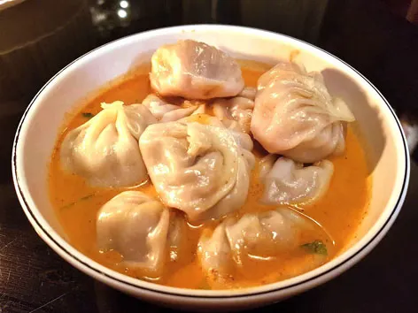

Jhol Mo:Mo:

Description
Jhol Momo is a popular Nepali street food consisting of steamed dumplings served in a thin, spicy, and tangy broth known as jhol. Unlike traditional momos that are served dry with a side dipping sauce (achar), jhol momo immerses the dumplings in a warm, soup-like sauce, making it a heartier, comfort-food-style dish.
The defining characteristic of jhol momo is its broth, which is typically sesame- and tomato-based, blended with aromatics like garlic, ginger, chilies, and Nepali timur (Sichuan pepper). This sauce is pourable and drinkable, offering a complex flavor profile that is nutty, spicy, and tangy.
Ingredients
- Ripe tomatoes 3–4 medium (~400–600 g)
- White sesame seeds, toasted 1–3 tbsp
- Roasted peanuts (optional) 1–2 tbsp
- Dried red chilies 2–4
- Garlic cloves 3–6
- Fresh ginger 1-inch piece
- Onion (optional) ½–1 medium
- Cumin seeds ½–1 tsp
- Turmeric powder ¼–½ tsp
- Timur (Sichuan pepper) ¼–½ tsp (the signature numbing spice)
- Mustard oil (or neutral oil) 2–3 tbsp
- Chicken or vegetable stock 1–2 cups
- Salt to taste
- Lemon juice 1 tsp
- Fresh coriander, for garnish a handful
Steps
- Make the Dough
- Mix flour with a pinch of salt.
- Gradually add warm water, kneading for 8–10 minutes until smooth and slightly tacky.
- Cover with a damp cloth and rest for 20–30 minutes.
- Make the Filling
- Heat a little oil in a pan. Sauté onion until translucent (~3 min).
- Add garlic, ginger, and green chili; cook 1 minute.
- Add minced chicken (or vegetables), soy sauce, salt, and pepper.
- Cook until the meat is done and moisture evaporates. Let cool completely before stuffing.
- Shape the Momos
- Roll the rested dough into thin discs (~5 cm).
- Place a spoonful of filling in the center.
- Pleat the edges and pinch to seal.
- Steam
- Line a steamer with parchment or cabbage leaves.
- Space momos ~2 cm apart (they expand).
- Steam over a rolling boil for 10–15 minutes until wrappers turn translucent.
- Make the Jhol (Broth)
- Char the tomatoes over an open flame or under a broiler until blistered and blackened. Peel the loose skin (a few charred flecks are fine).
- Toast sesame seeds in a dry skillet until golden and fragrant (~2–3 min). Set aside.
- Heat mustard oil in a pot until it just smokes. Add dried red chilies (15 sec), then cumin seeds (10 sec).
- Add garlic and ginger; stir 30 seconds.
- Add the charred tomatoes, toasted sesame seeds, turmeric, coriander powder, and salt. Cook 6–8 minutes, crushing tomatoes, until jammy and oil separates at the edges.
- Blend everything (including peanuts if using) until completely smooth.
- Return to the pot. Add 2 cups warm stock and stir. Simmer 3–5 minutes until thin and soup-like (should just coat the back of a spoon).
- Stir in lemon juice and timur (Sichuan pepper). Taste and adjust salt.
- Assemble & Serve
- Place steamed momos in warm bowls (~6 per bowl).
- Ladle hot jhol over them so they're half-submerged.
- Garnish with fresh coriander, spring onion, reserved sesame seeds, and a few drops of mustard oil.
- Serve immediately.
Home